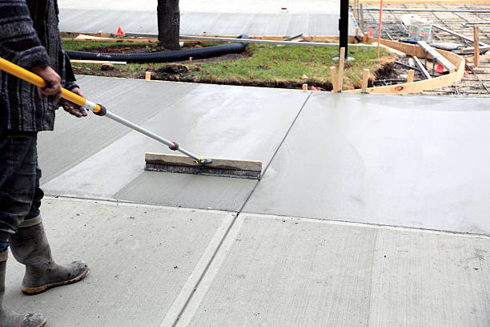

Hot Springs South Dakota
info@hudsonconcretecontractors.xyz
Hot Springs South Dakota
info@hudsonconcretecontractors.xyz

Premier concrete company in Hot Springs South Dakota offering comprehensive solutions for all concrete needs. Expert installation, repair, and maintenance with a focus on durability and aesthetic appeal. Contact us today!
Click Here To Call Us (877) 848-1711Looking for a reliable concrete company in Hot Springs South Dakota ? Our expert team specializes in delivering top-notch concrete solutions for residential, commercial, and industrial projects. Whether you're planning a new driveway, patio, or commercial foundation, we have the skills and experience to ensure your project is completed with the highest standards of quality and durability.
Why Choose Us for Your Concrete Needs in Hot Springs South Dakota ?
At Concrete, we pride ourselves on being the go-to concrete contractor in Hot Springs South Dakota . Our reputation is built on:
Experienced Professionals: Our team has years of experience in the concrete industry, ensuring precise and efficient workmanship.
High-Quality Materials: We use only the best materials, ensuring that your concrete structures are built to last.
Customized Solutions: Every project is unique, and we tailor our services to meet your specific needs and budget.
Timely Completion: We understand the importance of deadlines, and we strive to complete every project on time, without compromising on quality.
Our Concrete Services in Hot Springs South Dakota
We offer a wide range of concrete services, including:
Concrete Driveways: Durable and aesthetically pleasing driveways that stand the test of time.
Stamped Concrete: Add a decorative touch to your property with our custom stamped concrete designs.
Concrete Foundations: Strong and stable foundations for both residential and commercial properties.
Patios and Walkways: Beautiful outdoor spaces designed for comfort and style.
Concrete Repairs: Quick and reliable repairs to restore the integrity of your concrete surfaces.
Contact Us Today for a Free Estimate!
If you're in Hot Springs South Dakota and need professional concrete services, look no further. Contact us today to discuss your project and get a free, no-obligation estimate. Trust Concrete to bring your concrete vision to life!
Residential & commercial Concrete
Quality services at affordable prices
Immediate 24/ 7 emergency services


Concrete is renowned for its durability and strength, but even the toughest surfaces can develop cracks over time. At Hudson Concrete Contractors, serving Hot Springs South Dakota we understand the frustration that cracks can cause and are here to shed light on the common reasons behind these issues.
Shrinkage During Curing
One of the primary causes of cracks in concrete is shrinkage during the curing process. As concrete dries, it contracts. If the curing process is not managed properly, or if the concrete mix has high water content, this shrinkage can lead to surface cracks. Ensuring adequate curing techniques and proper mix proportions can help minimize these issues.
Temperature Fluctuations
Concrete is sensitive to temperature changes. Rapid fluctuations between hot and cold can cause expansion and contraction, leading to cracks. Extreme temperatures during setting or curing can exacerbate these problems. Implementing temperature control measures and using suitable concrete formulations can mitigate the effects of temperature changes.
Poor Concrete Mix and Compaction
The quality of the concrete mix plays a crucial role in its durability. An improperly mixed concrete or insufficiently compacted mixture can lead to weak spots that are prone to cracking. Using high-quality materials and ensuring proper mixing and compaction are essential for a long-lasting concrete surface.
Settlement and Soil Movement
Concrete slabs can crack due to underlying soil movement or settlement. If the ground beneath the concrete shifts or settles unevenly, it can cause the concrete to crack. Proper site preparation, including soil stabilization and adequate sub-base, helps prevent such issues.
Overloading
Excessive weight or stress placed on concrete surfaces can lead to cracks. Overloading beyond the designed capacity of the concrete can cause structural damage. Adhering to load limits and using reinforced concrete where necessary can prevent this problem.
For expert solutions to prevent and repair concrete cracks in Hot Springs South Dakota trust Hudson Concrete Contractors. Contact us today to ensure your concrete surfaces remain strong and crack-free!
Residential & commercial Concrete
Quality services at affordable prices
Immediate 24/ 7 emergency services
Finding trustworthy cement contractors near you can be challenging. Our team of certified cement contractors brings expertise and reliability right to your doorstep. We specialize in various cement applications, ensuring your projects are completed on time and within budget. With a focus on customer service and quality, we are committed to providing solutions that meet your specific needs while maintaining the highest standards of craftsmanship.

Quality concrete services don't have to break the bank. Our affordable concrete services are designed to provide high-quality solutions at competitive prices. We believe everyone deserves access to professional concrete work, so we offer a wide range of services without sacrificing quality. Whether you need residential or commercial concrete services, our team is here to help you achieve your goals within your budget.

Protecting your concrete surfaces is essential to extending their lifespan. Our concrete sealing services provide a protective barrier against moisture, stains, and damage. Our experienced technicians use high-quality sealants that enhance the durability and appearance of your concrete. Whether it’s for residential or commercial properties, we customize our sealing services to meet your specific needs. At Concrete, we understand the importance of maintaining your concrete, and we are here to offer expert advice and solutions for all your sealing needs.

Uneven concrete surfaces can pose safety hazards and detract from the appearance of your property. Our concrete leveling services in Hot Springs South Dakota can help restore stability and efficiency to your surfaces. We utilize advanced techniques, including mudjacking and polyjacking, to lift and level your concrete quickly and effectively. Our skilled team thoroughly assesses the situation and executes the best solution to ensure your concrete is even and safe. Trust us for your concrete leveling needs and bring back the functionality of your spaces.
A well-constructed foundation is vital to the success of any building project. Our concrete foundation installation services are designed to provide you with a stable and secure base for your home or commercial property. With our meticulous planning and execution, we ensure compliance with local codes and standards while using only the best materials. When you choose us, you’re choosing quality and dependability, making your construction project a success from the ground up.
If you’re looking to add vibrant color and style to your concrete surfaces, our concrete staining services are the perfect solution. Staining is an excellent way to enhance the appearance of patios, driveways, and floors, providing a beautiful finish that resembles natural stone. We utilize high-quality stains and expert techniques to achieve stunning results. Choosing us means you receive professional service, creative design options, and a beautiful transformation that will elevate your space.

There are many concrete construction companies but we stand out by offering superior craftsmanship and comprehensive services. Whether you need decorative concrete, foundations, or resurfacing services, our experienced team has the expertise to deliver exceptional results. We are dedicated to maintaining open communication and transparency throughout the entire process, ensuring your vision becomes a reality. Choosing us means you receive the highest standards of quality without compromising on service.

Our ready mix concrete delivery services in Hot Springs South Dakota provide a convenient solution for all your concrete needs. With a focus on punctuality and quality, we ensure that your concrete is mixed to perfection and delivered right when you need it. Our team is committed to maintaining the highest standards in concrete quality, guaranteeing that your projects flow seamlessly. By choosing us, you gain a reliable partner capable of meeting your demands efficiently and effectively.
Years Experience
Expert Technicians
Satisfied Clients
Compleate Projects
Why Choose Painting Vikmanic in Hot Springs South Dakota ?
At Painting Vikmanic, we understand that choosing the right painting contractor is crucial to transforming your space. That’s why we are dedicated to providing exceptional painting services across all cities in Hot Springs South Dakota . Our team of highly skilled professionals brings a wealth of experience and a passion for excellence to every project, ensuring your vision becomes a reality.
Why choose us? Our commitment to quality craftsmanship and customer satisfaction sets us apart. We use only the highest-quality materials and advanced techniques to deliver stunning, long-lasting results. Whether you’re looking to refresh your home’s interior, enhance your commercial property, or undertake a large-scale renovation, Painting Vikmanic has the expertise and resources to exceed your expectations.
Our services include everything from meticulous surface preparation to the application of beautiful finishes. We handle every aspect of your painting project with precision and care, ensuring a seamless and stress-free experience. Our attention to detail and dedication to excellence mean that we don’t just paint walls—we create enduring works of art.
Customer satisfaction is at the core of what we do. We offer free consultations and detailed estimates to ensure transparency and align with your budget. Our friendly and professional team is always ready to answer your questions and provide guidance, making the process as smooth and enjoyable as possible.
Choose Painting Vikmanic in Hot Springs South Dakota for your next painting project and experience the difference that expert craftsmanship and exceptional service can make. Contact us today to get started!
When searching for the best concrete contractors near you, it can be overwhelming to sift through all the local options. At Concrete, we understand that you want reliable, professional, and affordable services. Our team of expert concrete contractors is committed to delivering exceptional quality and customer satisfaction. Whether it’s a new driveway, patio, or commercial project, we have the skills and resources to handle any size job. We pride ourselves on our strong reputation built on trust and quality work, making us the best choice for your concrete needs.
In today's world, ensuring your home has a solid foundation is key to its longevity and aesthetic appeal. Our residential concrete services in Hot Springs South Dakota encompass everything from driveways to patios and walkways. We pride ourselves on using the finest materials and techniques to provide durable, visually appealing surfaces that stand the test of time. Plus, our team will work closely with you to create custom designs that fit your vision and budget, making your home beautiful and functional.
In today’s competitive market, your business needs contractors who understand the unique challenges of commercial projects. Our commercial concrete contractors specialize in large-scale concrete solutions tailored to meet the demands of businesses in Hot Springs South Dakota . Whether you require a solid foundation, smooth floors, or structured sidewalks, we have the expertise to deliver results that ensure safety, longevity, and aesthetic appeal. We work closely with business owners, architects, and engineers to ensure that all specifications are met and that each project aligns with your business goals. Trust us to be your reliable partner in concrete solutions.
Your driveway is the first impression of your home, making it vital to choose a reputable contractor for its installation. Our dedicated team specializes in concrete driveway installation utilizing the best materials and techniques to create a durable, long-lasting surface that enhances your home’s curb appeal. Not only do our driveways withstand heavy traffic and the elements, but they also offer customization options such as color and texture, ensuring a perfect fit for your home's design. Trust Concrete for unmatched quality and service in driveway installations.
Add value and beauty to your outdoor space with our expert concrete patio installation services. We offer a variety of styles, colors, and finishes to create the perfect patio that suits your lifestyle. Our team works diligently to ensure that every installation is seamless and enhances the overall aesthetic of your backyard. Whether you envision a simple outdoor space or a complex design, we are committed to delivering exceptional results tailored to your style. Choose us for concrete patio installation in Hot Springs South Dakota and let’s create an inviting space for you and your family to enjoy.
Stamped concrete offers a unique and stylish alternative to traditional concrete surfaces. Our stamped concrete services provide the opportunity to achieve the look of high-end materials like stone or brick at a fraction of the cost. Our skilled artisans use advanced techniques to create stunning patterns and designs that will elevate your residential or commercial property. Whether for driveways, patios, or walkways, our stamped concrete not only adds visual appeal but also durability, making it a smart investment. Experience the beauty of stamped concrete today by choosing Concrete.
A strong foundation is crucial for any structure. If you're noticing signs of foundation issues, you need reliable concrete foundation repair services. Our experts will evaluate your foundation and recommend the best solutions to restore its stability. We employ the latest techniques and technologies to ensure effective repairs that stand the test of time. At Concrete, we understand the complexities of foundation repair and are dedicated to providing top-notch service and support every step of the way. Invest in your property with our trusted foundation repair solutions.
Concrete slabs serve as the backbone for many structures, offering stability and durability. Our concrete slab installation services are aimed at providing a solid foundation for your building, whether it’s residential or commercial. Our experienced contractors utilize cutting-edge technology and techniques to ensure that your slab is installed properly and securely. We consider factors such as soil conditions, moisture control, and load specifications to create a slab that will last for decades. Trust us to deliver high-quality concrete slabs that meet your specific project needs and requirements.
Transform your outdoor or indoor space with our decorative concrete services that are as beautiful as they are functional. From stamped and stained concrete to overlays and custom designs, we have the creative solutions to enhance your property in Hot Springs South Dakota . Our skilled team combines artistry with technical expertise to execute designs that match your style and vision. Whether it’s for patios, walkways, or flooring, our decorative services add a unique touch to any project. Choose Concrete and elevate your spaces with our stunning decorative concrete options.
If your concrete surfaces are showing wear and tear, our concrete resurfacing services are the ideal solution to restore their beauty and functionality. This cost-effective approach extends the lifespan of your concrete while revitalizing its appearance. We use high-quality resurfacement products that create a smooth finish and are resistant to cracking and peeling. Our team is dedicated to working closely with you to select the best techniques and finishes for your specific needs.
Damaged concrete can lead to safety hazards and detract from your property’s value. Our concrete repair contractors are skilled in identifying and fixing a wide range of issues, from cracks and spalling to significant structural damage. We take a comprehensive approach to each repair project, ensuring that we address the root cause of the problem, not just the symptoms. Our team uses high-quality materials and proven repair techniques, providing you with long-lasting solutions that restore the integrity and appearance of your concrete surfaces. When it comes to concrete repair, trust us to get the job done right.
Sidewalks play a vital role in accessibility and safety in your community. Our sidewalk concrete repair services ensure that your sidewalks remain smooth, safe, and visually appealing. We specialize in repairing cracks, lifting uneven slabs, and restoring surfaces to their original condition. Our team is dedicated to providing quick, efficient service, minimizing disruption to foot traffic while we work. With our expertise, your sidewalks will be restored to a safe and welcoming condition. Choose our sidewalk repair services to maintain a safe walking environment for your family and community.
When it comes to flooring solutions, concrete offers unmatched durability and versatility. Our concrete floor installation services in Hot Springs South Dakota provide an attractive, low-maintenance option for both residential and commercial spaces. We can customize your concrete floors with various finishes, colors, and patterns to match your style. Our team of experts ensures a precise installation that will last for years, giving you a beautiful surface that can withstand daily wear and tear. Trust Concrete for all your concrete flooring needs and experience the benefits of this timeless choice.
When replacing or updating your concrete surfaces, effective concrete removal is essential. Our concrete removal services in Hot Springs South Dakota are thorough and efficient, ensuring that all unwanted concrete is safely and completely taken away. Our experienced team is equipped with the right tools and techniques to handle any job, big or small, while minimizing disruption to your property. We prioritize safety, proper disposal, and clean-up, leaving you with a fresh canvas for your new project. Rely on us for all your concrete removal needs, and achieve a hassle-free transition to new surfaces.
Finding a reliable local concrete company can make all the difference in your construction projects. At Concrete, we pride ourselves on being a trusted choice among local concrete companies in Hot Springs South Dakota . Our commitment to quality, affordability, and customer service has made us a preferred contractor for all concrete services. We are deeply rooted in the community and dedicated to providing top-notch services tailored to meet the specific needs of our clients. Partner with us for your next concrete project, and experience the local difference.
Choosing the best concrete contractors is crucial for the success of your project. At Concrete, we are proud to be recognized as the best in Hot Springs South Dakota for our exceptional workmanship, attention to detail, and customer-first approach. Our team consists of skilled professionals who are passionate about delivering high-quality concrete solutions tailored to your needs. We employ the latest techniques and equipment to ensure every project is executed flawlessly, from start to finish. Experience the excellence that comes with choosing the best in the business.
Our concrete pouring services in Hot Springs South Dakota are perfect for both new constructions and renovation projects where a solid and durable foundation is necessary. Our skilled team ensures that all pouring is executed with precision, adhering to local regulations and industry best practices. We utilize high-quality concrete mixes and advanced equipment to deliver consistent results. By choosing us, you benefit from our reliability, experience, and dedication to achieving the best possible outcomes for your projects.
Understanding what influences the durability and lifespan of concrete is crucial for homeowners and businesses in Hot Springs South Dakota . At Hudson Concrete Contractors, we are committed to providing insights that help you maximize the longevity of your concrete surfaces.
Mix Quality and Proportions
The quality of the concrete mix is foundational to its durability. Proper ratios of cement, water, and aggregates ensure a strong and resilient surface. Using high-quality materials and adhering to precise mixing proportions can significantly enhance the lifespan of concrete.
Curing and Temperature Control
Proper curing is essential for concrete strength and durability. Curing helps maintain the moisture content required for the chemical reactions in concrete to fully develop. Extreme temperatures can impact the curing process, leading to potential weaknesses. Controlled curing practices and temperature management are vital for ensuring a durable finish.
Site Preparation and Foundation Stability
The stability of the underlying soil and foundation directly affects the concrete’s performance. Proper site preparation, including soil compaction and grading, is necessary to prevent future settlement or shifting. An unstable base can lead to cracks and reduce the overall lifespan of the concrete.
Exposure to Environmental Conditions
Concrete surfaces are subject to environmental factors such as moisture, freeze-thaw cycles, and chemical exposure. Proper sealing and protective measures can help mitigate the impact of these conditions, preventing damage and extending the concrete’s lifespan.
Load and Stress Management
Understanding the expected load and stress on concrete surfaces is crucial. Overloading or structural stress can compromise concrete’s durability. Ensuring the correct thickness, reinforcement, and design based on usage requirements helps maintain the structural integrity of your concrete.
Regular Maintenance and Repairs
Routine maintenance, including cleaning and timely repairs, is essential for preserving concrete durability. Addressing minor issues before they escalate can prevent significant damage and extend the life of your concrete surfaces.
For expert guidance and quality concrete services in Hot Springs South Dakota trust Hudson Concrete Contractors. We provide comprehensive solutions to ensure the durability and longevity of your concrete investments. Contact us today to learn more!
Hot Springs (Lakota: mni kȟáta; 'hot water') is a city in and county seat of Fall River County, South Dakota, United States. As of the 2020 census, the city population was 3,395. In addition, neighboring Oglala Lakota County contracts the duties of Auditor, Treasurer and Register of Deeds to the Fall River County authority in Hot Springs.
The time frame depends on the project size, but most concrete projects by Hudson Concrete Contractors are completed within 3-7 days .
Yes, we offer concrete demolition and removal services for old or damaged concrete .
Yes, Hudson Concrete Contractors provides residential concrete services such as driveway, patio, and walkway installations in Hot Springs South Dakota .
Yes, we offer a variety of colored concrete options to enhance the appearance of your patios, driveways, or walkways .
Yes, we specialize in stamped concrete services offering decorative options to mimic stone, brick, or tile.
Concrete typically takes around 28 days to fully cure, but it can be walked on within 24-48 hours. Hudson Concrete Contractors advises waiting longer for heavy loads.
Absolutely. Hudson Concrete Contractors has extensive experience managing large-scale commercial concrete projects .
Concrete is a sustainable material, especially when recycled. Hudson Concrete Contractors follows environmentally friendly practices .
Yes, we use special techniques and additives to pour concrete in cold weather conditions ensuring proper curing.
Yes, Hudson Concrete Contractors is fully licensed and insured to provide professional and safe concrete services in Hot Springs South Dakota .
Cement is a key ingredient in concrete. Concrete is a mixture of cement, sand, gravel, and water. Hudson Concrete Contractors uses high-quality concrete for all projects in Hot Springs South Dakota .
Yes, we provide concrete leveling and repair services in Hot Springs South Dakota to fix uneven or sunken surfaces.
Yes, we offer durable concrete retaining wall construction in Hot Springs South Dakota for both residential and commercial properties.
Proper site preparation, including grading and leveling, is crucial. Hudson Concrete Contractors handles all prep work to ensure a smooth, durable installation in Hot Springs South Dakota .
Yes, Hudson Concrete Contractors has the expertise and equipment to manage large commercial and residential concrete projects .
Concrete is low-maintenance but sealing every few years and occasional cleaning can help prolong its life. Hudson Concrete Contractors provides maintenance tips in Hot Springs South Dakota .
A properly installed concrete driveway by Hudson Concrete Contractors can last up to 30 years with proper maintenance .
Yes, we provide professional concrete repair services to fix cracks, spalling, and other damage.
The best time to pour concrete is during mild weather conditions, typically in spring or fall, but we can work year-round.
Yes, we provide concrete sidewalk installation and repair services for residential and commercial properties .
Yes, Hudson Concrete Contractors offers free, no-obligation estimates for all concrete projects .
Yes, we offer custom concrete design services, including decorative, stamped, and colored options to match your vision .
Hudson Concrete Contractors recommends high-strength, durable concrete mixes designed for heavy traffic and weather resistance for driveways .
The cost of concrete work depends on the project's size and complexity. Hudson Concrete Contractors offers competitive pricing and free estimates .
We recommend waiting at least 7 days before driving on a new concrete driveway installed by Hudson Concrete Contractors in Hot Springs South Dakota .
Concrete is an excellent option for patios in Hot Springs South Dakota due to its durability, low maintenance, and customization options for color and texture.
Yes, Hudson Concrete Contractors provides expert concrete foundation installation for homes and commercial buildings .
Yes, we use steel reinforcement (rebar or mesh) in concrete installations to increase strength and durability in Hot Springs South Dakota .
Yes, we offer concrete resurfacing services in Hot Springs South Dakota to restore old, worn-out surfaces and make them look brand new.
Hudson Concrete Contractors provides a range of services including driveways, patios, foundations, sidewalks, and decorative concrete installations.
Hudson Concrete Contractors transformed our old concrete slab into a beautiful new surface. Their attention to detail and efficiency in Hot Springs South Dakota were impressive. The entire process was smooth and stress-free. Highly recommend! — Emily S.
Profession
Hudson Concrete Contractors provided excellent service for our driveway installation in Hot Springs South Dakota . They were knowledgeable, friendly, and delivered a high-quality finish. We couldn’t be happier with the results! — Jessica M.
Profession
I’m so pleased with the new concrete sidewalk Hudson Concrete Contractors installed in Hot Springs South Dakota . Their team was skilled, professional, and completed the project on schedule. The new sidewalk looks amazing! — Amanda L.
Profession
Hot Springs SD Concrete Pros
(877) 848-1711
info@hudsonconcretecontractors.xyz
09.00 AM - 09.00 PM
09.00 AM - 12.00 PM